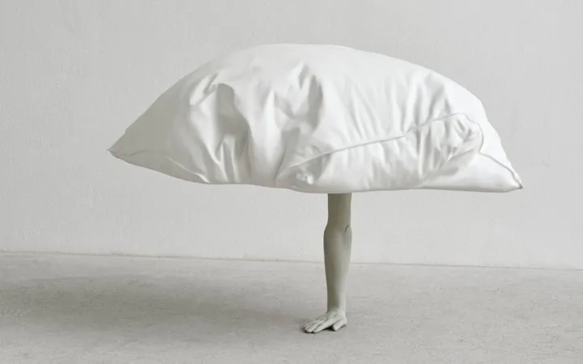

da mer 6 mag a dom 22 nov
Erwin Wurm. Dreamers
Il Museo Fortuny presenta per la prima volta in Italia un’ampia mostra monografica dedicata al lavoro dello scultore austriaco Erwin Wurm , nato nel 1954 a Bruck an der Mur. Nel corso della sua carriera Wurm ha radicalmente ampliato il concetto di scultura, mettendo in…
 Indicazioni
Indicazioni
- Costi e prenotazioni
- Costo non indicato · Prenotazione non indicata
- Programma
- Programma da verificare. Apri la fonte ufficiale per orari e possibili aggiornamenti.
- In caso di maltempo
- Nessuna indicazione specifica pubblicata.
- Note
- Acquisito automaticamente dalla fonte.
L’EVENTO
Descrizione completa
Il Museo Fortuny presenta per la prima volta in Italia un’ampia mostra monografica dedicata al lavoro dello scultore austriaco Erwin Wurm , nato nel 1954 a Bruck an der Mur. Nel corso della sua carriera Wurm ha radicalmente ampliato il concetto di scultura, mettendo in discussione le nozioni di tempo, massa e superficie, astrazione e rappresentazione, e da molti decenni usa gli abiti per affrontare questioni scultoree. Lungo questo viaggio il suo cammino ha spesso incrociato la strada di Mariano e Henriette Fortuny. Dopo gli studi all’Accademia di Belle Arti e alla Scuola di Arti Applicate di Vienna tra la fine degli anni Settanta e i primi Ottanta, grazie alle One Minute Sculptures, iniziate nel 1996-97, Wurm ha riscosso grande successo internazionale. In queste opere l’artista fornisce agli osservatori istruzioni che indicano azioni o pose da eseguire con oggetti di uso quotidiano, come sedie, secchi, frutta, maglioni… Sono sculture per natura effimere, e ciò ha portato Wurm a sfidare le qualità formali di diversi linguaggi visivi superando i confini tra arte e vita di ogni giorno, spettatore e partecipante.
La serie di One Minute Sculptures esplora l’idea del corpo umano come scultura; in altre opere Wurm antropomorfizza oggetti di uso quotidiano in modi inaspettati, aggiungendo gambe alle borse, contorcendo forme simili a salsicce (Abstract Sculptures), o espandendo il volume di oggetti tecnici e architettonici (Fat Car, Fat House). Wurm considera l’atto fisico di aumentare e perdere peso come un gesto scultoreo, e spesso crea l’illusione di crescita o restringimento corporeo nel suo lavoro. Per l’artista anche l’umorismo è uno strumento importante, ma allo stesso tempo il suo lavoro si apre a questioni filosofiche, psicologiche e sociali essenziali. Spesso è rintracciabile nella sua pratica una critica della società contemporanea, in particolare in risposta alle influenze capitalistiche e alle conseguenti pressioni sociali che l’artista vede come contrarie ai nostri ideali interiori. Wurm enfatizza questa dicotomia lavorando all’interno dello spazio liminale tra alto e basso, per esplorare quella che egli stesso vede come una realtà farsesca e inventata.
Photo credits Fondazione Musei Civici di Venezia
IL PROGRAMMA
Programma e orari
Appuntamenti raccolti dalle fonti elencate. Dove manca un orario, non è ancora disponibile in questa scheda.
Programma pubblicato
- 2026-05-06 — 2026-11-22 ·
INFORMAZIONI UTILI
Prima di partire
- Controllare la fonte prima di partire.
ORGANIZZAZIONE